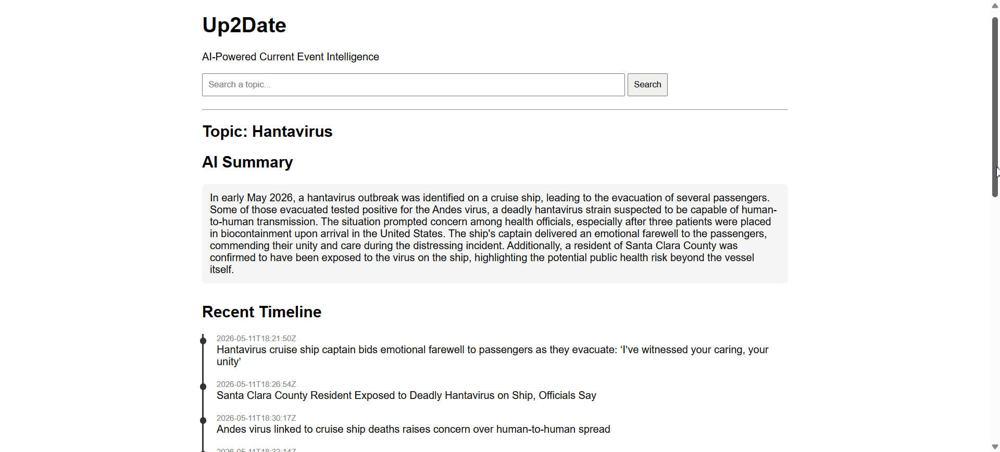
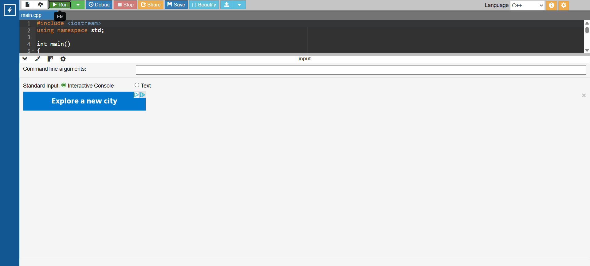

IT • Cybersecurity • Software Projects Portfolio
I am an IT and Cybersecurity student at Carl Sandburg College pursuing an Associate of Applied Science degree in IT & Cyber Security, with one semester remaining before graduation in 2026. Through coursework, certifications, labs, and personal projects, I have developed hands-on experience with networking, technical support, hardware and software troubleshooting, virtualization, cybersecurity concepts, and Cisco technologies.
My technical background includes multiple certifications through Cisco Networking Academy and Carl Sandburg College covering networking, routing and switching, wireless networking, network security, cybersecurity operations, computer support, and computer technician coursework. These experiences have helped me build a strong foundation in IT infrastructure, troubleshooting, security concepts, and network technologies while gaining practical experience through Cisco Packet Tracer labs and technical projects.
I enjoy working on projects that allow me to apply real-world problem solving to networking, systems, cybersecurity, and technology-related challenges. My portfolio highlights coursework, technical development, and projects focused on networking, cybersecurity, data analysis, AI concepts, and IT support technologies.
I am currently seeking opportunities in IT support, networking, or cybersecurity where I can continue developing my technical skills, contribute to a strong team environment, and grow within the technology field.
Resume: View my Indeed Profile
An AI-powered web application that transforms live news into structured summaries, timelines, and statistics.

Key Features:
A C++ program that compares quarterback passing yards to the top 15 NFL seasons of all time using structured conditional logic.

Key Features: